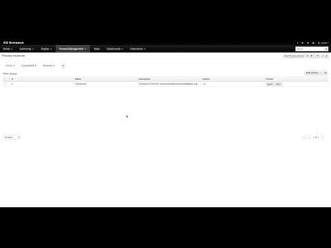

KIE Server (jBPM extension) brings document support
Business processes quite frequently need collaboration around documents (in any meaning of it), thus is it important to allow users to upload and download documents. jBPM provided documents support in version 6 already though it was not exposed on KIE Server for remote interaction.
jBPM 7 will come with support for documents in KIE Server – that covers both use within process context and outside – direct interaction with underlying document storage.
jBPM and documents
To recap quickly how document support is provided by jBPM
Documents are considered process variables, as such they are applicable for the pluggable persistence strategies defined. Persistence strategies allow to provide various backend storage for process variables, instead of always be put together with process instance into jBPM data base.
Document is represented by org.jbpm.document.service.impl.DocumentImpl type and comes with dedicated marshaling strategy to deal with this type of variables org.jbpm.document.marshalling.DocumentMarshallingStrategy. In turn marshaling strategy relies on org.jbpm.document.service.DocumentStorageService that is an implementation specific to document storage of your choice. jBPM comes with out of the box implementation of the storage service that simply uses file system as underlying storage system.
Users can implement alternative DocumentStorageService to provide any kind of storage like data base, ECM etc.
KIE Server in version 7, provides full support for described above usage – including pluggable DocumentStorageService implementations – and it extends it bit more. It provides REST api on top of org.jbpm.document.service.DocumentStorageService to allow easy access to underlying documents without a need to always go over process instance variables, though it still allows to access documents from within process instance.
KIE Server provides following endpoints to deal with documents:
- list documents – GET – http://host:port/kie-server/services/rest/server/documents
- accept page and pageSize as query parameters to control paging
- create document – POST – http://host:port/kie-server/services/rest/server/documents
- DocumentInstance representation in one of supported format (JSON, JAXB, XStream)
- delete document – DELETE – http://host:port/kie-server/services/rest/server/documents/{DOC_ID}
- get document (including content) – GET – http://host:port/kie-server/services/rest/server/documents/{DOC_ID}
- update document – PUT – http://host:port/kie-server/services/rest/server/documents
- DocumentInstance representation in one of supported format (JSON, JAXB, XStream)
- get content – GET – http://host:port/kie-server/services/rest/server/documents/{DOC_ID}/content
NOTE: Same operations are also supported over JMS.
Documents in action
- Deploy translations project (that is part of jbpm-playground repository) to KIE Server
- Create new translation process instance from workbench
- Create new translation process instance from JavaScript client – simple web page
- Download and remove documents from JavaScript client

Sample source
For those how would like to try it out themselves, here is a JavaScript client (a simple web page) that was used for the example screencast. Please make sure you drop it on kie server instance to not run into CORS related issues.
<html>
<head>
<title>Send document to KIE Server</title>
<style type="text/css">
table.gridtable {
font-family: verdana,arial,sans-serif;
font-size:11px;
color:#333333;
border-width: 1px;
border-color: #666666;
border-collapse: collapse;
}
table.gridtable th {
border-width: 1px;
padding: 8px;
border-style: solid;
border-color: #666666;
background-color: #dedede;
}
table.gridtable td {
border-width: 1px;
padding: 8px;
border-style: solid;
border-color: #666666;
background-color: #ffffff;
}
</style>
<script type='text/javascript'>
var user = "";
var pwd = "";
var startTransalationProcessURL = "http://localhost:8230/kie-server/services/rest/server/containers/translations/processes/translations/instances";
var documentsURL = "http://localhost:8230/kie-server/services/rest/server/documents";
var srcData = null;
var fileName = null;
var fileSize = null;
function encodeImageFileAsURL() {
var filesSelected = document.getElementById("inputFileToLoad").files;
if (filesSelected.length > 0) {
var fileToLoad = filesSelected[0];
fileName = fileToLoad.name;
fileSize = fileToLoad.size;
var fileReader = new FileReader();
fileReader.onload = function(fileLoadedEvent) {
var local = fileLoadedEvent.target.result; // <--- data: base64
srcData = local.replace(/^data:.*/.*;base64,/, "");
console.log("Converted Base64 version is " + srcData);
}
fileReader.readAsDataURL(fileToLoad);
} else {
alert("Please select a file");
}
}
function startTransalationProcess() {
var xhr = new XMLHttpRequest();
xhr.open('POST', startTransalationProcessURL);
xhr.setRequestHeader('Content-Type', 'application/json');
xhr.setRequestHeader ("Authorization", "Basic " + btoa(user + ":" + pwd));
xhr.onreadystatechange = function () {
if (xhr.readyState == 4 && xhr.status == 201) {
loadDocuments();
}
}
var uniqueId = generateUUID();
xhr.send('{' +
'"uploader_name" : " '+ document.getElementById("inputName").value +'",' +
'"uploader_mail" : " '+ document.getElementById("inputEmail").value +'", ' +
'"original_document" : {"DocumentImpl":{"identifier":"'+uniqueId+'","name":"'+fileName+'","link":"'+uniqueId+'","size":'+fileSize+',"lastModified":'+Date.now()+',"content":"' + srcData + '","attributes":null}}}');
}
function deleteDoc(docId) {
var xhr = new XMLHttpRequest();
xhr.open('DELETE', documentsURL +"/" + docId);
xhr.setRequestHeader('Content-Type', 'application/json');
xhr.setRequestHeader ("Authorization", "Basic " + btoa(user + ":" + pwd));
xhr.onreadystatechange = function () {
if (xhr.readyState == 4 && xhr.status == 204) {
loadDocuments();
}
}
xhr.send();
}
function loadDocuments() {
var xhr = new XMLHttpRequest();
xhr.open('GET', documentsURL);
xhr.setRequestHeader('Content-Type', 'application/json');
xhr.setRequestHeader ("Authorization", "Basic " + btoa(user + ":" + pwd));
xhr.onreadystatechange = function () {
if (xhr.readyState == 4 && xhr.status == 200) {
var divContainer = document.getElementById("docs");
divContainer.innerHTML = "";
var documentListJSON = JSON.parse(xhr.responseText);
var documentsJSON = documentListJSON['document-instances'];
if (documentsJSON.length == 0) {
return;
}
var col = [];
for (var i = 0; i < documentsJSON.length; i++) {
for (var key in documentsJSON[i]) {
if (col.indexOf(key) === -1) {
col.push(key);
}
}
}
var table = document.createElement("table");
table.classList.add("gridtable");
var tr = table.insertRow(-1);
for (var i = 0; i < col.length; i++) {
var th = document.createElement("th");
th.innerHTML = col[i];
tr.appendChild(th);
}
var downloadth = document.createElement("th");
downloadth.innerHTML = 'Download';
tr.appendChild(downloadth);
var deleteth = document.createElement("th");
deleteth.innerHTML = 'Delete';
tr.appendChild(deleteth);
for (var i = 0; i < documentsJSON.length; i++) {
tr = table.insertRow(-1);
for (var j = 0; j < col.length; j++) {
var tabCell = tr.insertCell(-1);
tabCell.innerHTML = documentsJSON[i][col[j]];
}
var tabCellGet = tr.insertCell(-1);
tabCellGet.innerHTML = '<button id="button" onclick="window.open('' + documentsURL +'/'+documentsJSON[i]['document-id']+'/content')">Download</button>';
var tabCellDelete = tr.insertCell(-1);
tabCellDelete.innerHTML = '<button id="button" onclick="deleteDoc(''+documentsJSON[i]['document-id']+'')">Delete</button>';
}
divContainer.appendChild(table);
}
}
xhr.send();
}
function generateUUID() {
var d = new Date().getTime();
var uuid = 'xxxxxxxx-xxxx-4xxx-yxxx-xxxxxxxxxxxx'.replace(/[xy]/g, function(c) {
var r = (d + Math.random()*16)%16 | 0;
d = Math.floor(d/16);
return (c=='x' ? r : (r&0x3|0x8)).toString(16);
});
return uuid;
}
</script>
</head>
<body>
<h2>Start transalation process</h2>
Name: <input name="name" type="text" id="inputName"/><br/><br/>
Email: <input name="email" type="text" id="inputEmail"/><br/><br/>
Document to translate: <input id="inputFileToLoad" type="file" onchange="encodeImageFileAsURL();" /><br/><br/>
<input name="send" type="submit" onclick="startTransalationProcess();" /><br/><br/>
<hr/>
<h2>Available documents</h2>
<button id="button" onclick="loadDocuments()">Load documents!</button>
<div id="docs">
</div>
</body>
</html>

{kind=link}